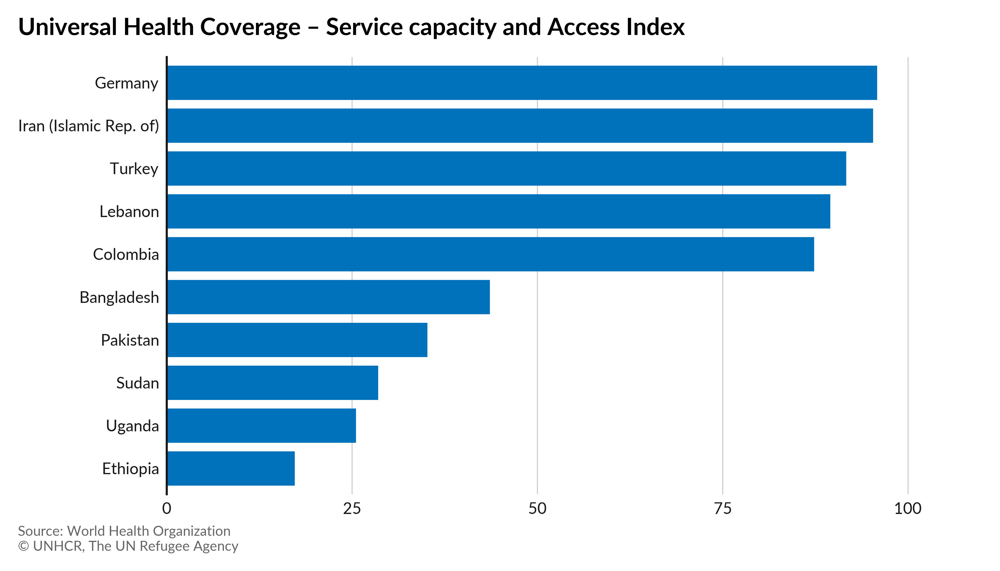

Low COVID-19 vaccination rates in lower income countries compound risks for refugees
14 February 2022
As global income inequities combine with uneven access to vaccines, already vulnerable populations, like refugees, are being hit hardest.
More than half of the world’s 26.6 million refugees and 3.9 million Venezuelans displaced abroad (53 per cent) are hosted in just 10 countries. Nine of these are low- and middle-income, where COVID-19 vaccination rates have remained low due to both a shortage of vaccine doses and weak health systems.
Even when refugees are included in national vaccination plans, they can face additional barriers to getting vaccinated. For example, some countries require identity documents, which refugees often do not have, while others have set up online systems that can exclude those without internet access, a computer, or a smartphone. As a result, vaccination rates among refugees may be lower than the national average.
Refugees are 50 per cent less likely than non-refugees to have an internet-capable phone. Globally, 29 per cent of refugees have no phone at all.
In parallel, even where refugees are included in national health systems, overall capacity and coverage of essential health services1 in major host countries is often substandard. For example, looking at the availability of hospital beds, health workers and health security2, half of the top 10 host countries rank below 50, on a 0-100 scale (see below). Coupled with low vaccination rates, this continues to leave refugees vulnerable to the pandemic and the long-term health impacts of COVID-19.

UNHCR Related Story UNHCR Global Focus- This refers to the Sustainable Development Goal (SDG) 3.8.1 Universal Health Coverage Service Index. SDG 3.8.1. is defined as the average coverage of essential services based on tracer interventions that include reproductive, maternal, newborn and child health, infectious diseases, non-communicable diseases and service capacity and access, among the general and the most disadvantaged population.
- This refers to SDG sub-index service capacity and access which looks at the availability ofhospital beds, health workforce and health security.